From a 2014 Wall Prediction to Four 10-Year-Olds at an Adult AI Hackathon
- 20 years in education in China · 13,000+ hours of classroom teaching; father of two children (ages 14 and 10)
- Chief Designer of the HD Video Course & Dual-Teacher Live Class; author of “The Core of Product”
- Founded MarsNavi in the AI era: bringing kids aged 8–14 together in 6-person online teams for 2.5 hours every week to solve real-world problems and ship real products with AI
1. Our Starting Point: Why the November 3, 2014 Prediction Waited for the AI Era
On November 3, 2014, at an education exhibition, I wrote a sentence on the wall: “By November 3, 2024, learning data will replace exam scores as a fair standard for college admissions.” Ten years passed, and honestly, that prediction did not come true on time. Why? Because in traditional classrooms, we only had the final test score. How a child actually thought, argued, weighed trade-offs, and solved problems was a total black box—nobody could record it at scale.
When ChatGPT first came out, I looked at my own two children—my son, who is 14, and my daughter, who is 10—and asked myself a parent's question: by the time they graduate from college eight to twelve years from now, what kind of world will they step into? Drilling for standardized test scores will never prepare them for a world where AI can answer every test question in seconds. And at that exact moment, the AI wave made two things possible at once for the first time in history: children aged 8 to 14 can cross technical barriers to build and ship real working products, and our online + AI system can capture their entire thinking and collaboration process naturally. That was the starting point of MarsNavi.
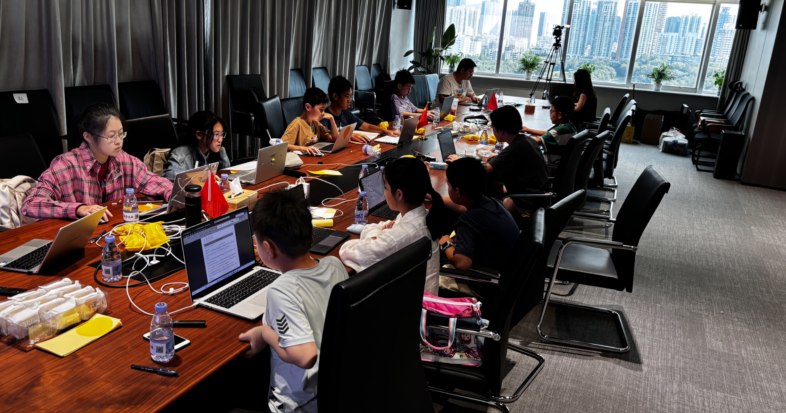
2. Opening Scene: Four Kids (Ages 9–12, Zero Coding) at an Adult AI Hackathon (#18 / 40+)
In May 2026, four of our students—aged 9 to 12, elementary schoolers who had never learned programming—entered the OpenClaw Hackathon in Beijing. This was not a youth contest. It was a standard adult hackathon with more than 40 teams of big-tech programmers, product managers, and computer science university students. Our four students were the only kids' team in the entire venue.
They didn't build a toy topic to please adults. They built a Youth Stress-Relief Companion Agent designed to help themselves and their classmates handle real emotional pressure from school and family life. And the toughest part of the competition was on the giant screen behind them: the judge at this hackathon was also an AI. That AI judge didn't know they were ten-year-olds and showed zero leniency—throwing round after round of sharp critiques challenging their prompt structure, word limits, and safety boundaries.
Those four kids withstood every single round of critique from the AI judge, defended their design, iterated their product on the spot, and finished 18th out of more than 40 adult teams. Even the organizers wrote afterward that these four children operated like a seasoned product team. Why could four kids with zero coding background beat over twenty adult teams? Because with AI, making a prototype run is no longer the bottleneck—the real differentiator is the depth of human thinking before and after generation.
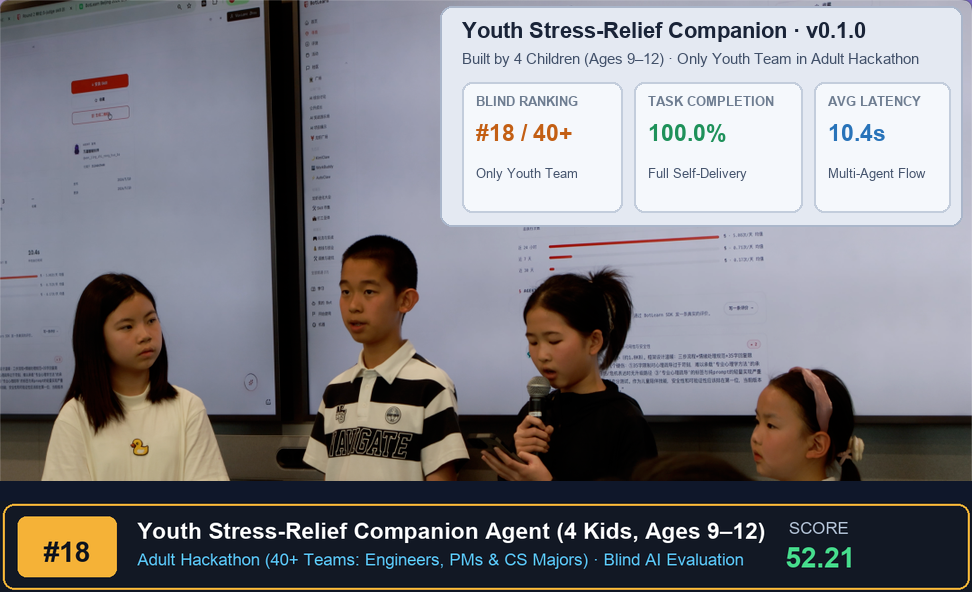
Why PBL Was So Hard to Scale—and How AI Breaks the Knowledge, Coach, and Delivery Walls
For decades, educators everywhere agreed that Project-Based Learning (PBL) is wonderful, yet almost nobody could run authentic PBL at scale. Why? Because three structural walls stood in the way: the Knowledge Wall (real-world problems cross multiple disciplines, forcing teachers to spend months lecturing on background theory before kids could start), the Coach Wall (every student team picks a different topic, requiring an impossible 'omniscient' teacher who masters every domain and tool in advance), and the Delivery Wall (without coding or engineering skills, children's projects almost always ended as a poster, a slide deck, or a cardboard model rather than a real working product). Today, AI breaks all three walls.
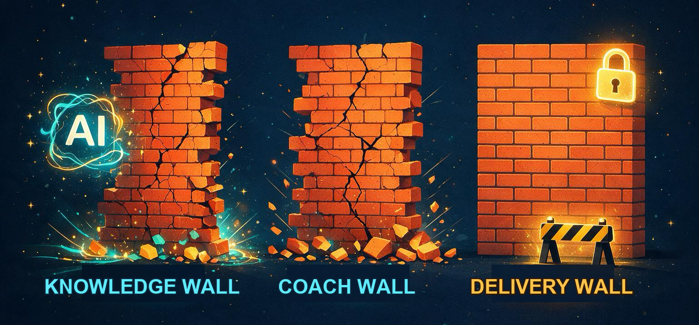
1. Breaking the Knowledge Wall: Problem-Driven Cross-Disciplinary Inquiry via AI
Instead of sitting through months of background lectures, our students start straight from a concrete product problem and query AI layer by layer—like giving every six-kid team three or four dedicated graduate teaching assistants. Here are three real examples from our 2026 cohorts:
Children's Dream Analysis Bot: Unpacking Freud into 4 Steps
A team of 10-to-14-year-olds wanted to build a dream-interpretation agent for peers. They read the comic edition of Freud's “The Interpretation of Dreams” and tested DeepSeek, GPT, and Doubao using their own real dreams. With AI's help, they distilled heavy psychoanalytic theory into a clear 4-step workflow in kid-friendly language: (1) repeat the dream, (2) break down dream elements, (3) analyze feelings inside the dream, and (4) connect the dream to real life.
20,000-Word Cat Care Knowledge Base & Readiness Test Website
To stop people from adopting cats on impulse and abandoning them later, a team aged 11–14 built an interactive website testing whether a user truly has the patience and budget to raise a cat. By interviewing real cat owners and querying AI, they compiled a 20,000-word knowledge base covering ringworm treatment, cats running wild at 3 a.m., prescription cat food, and real veterinary bills.
“World Prism”: Animal Vision Optics & Psychology Simulator
Using DeepSeek for biological optics research and Trae for front-end coding, students investigated how different species perceive color spectra, motion, and depth—shipping a web application that transforms user-uploaded photos into different animals' visual fields and interprets animal psychology.
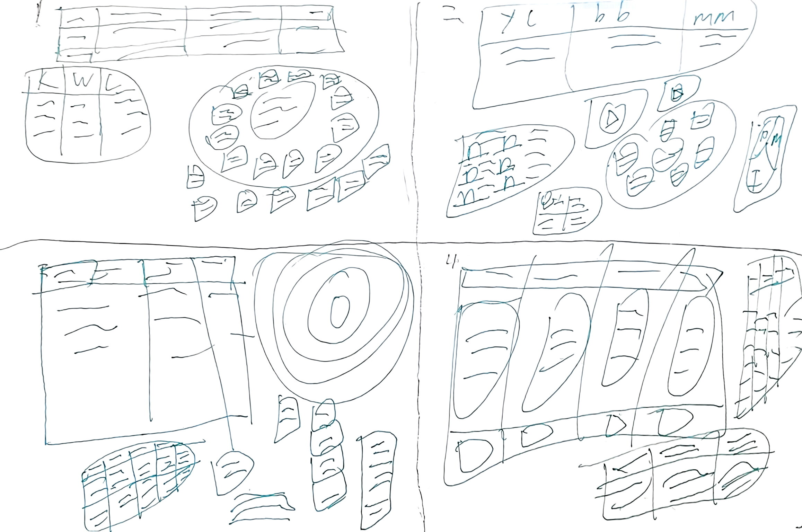
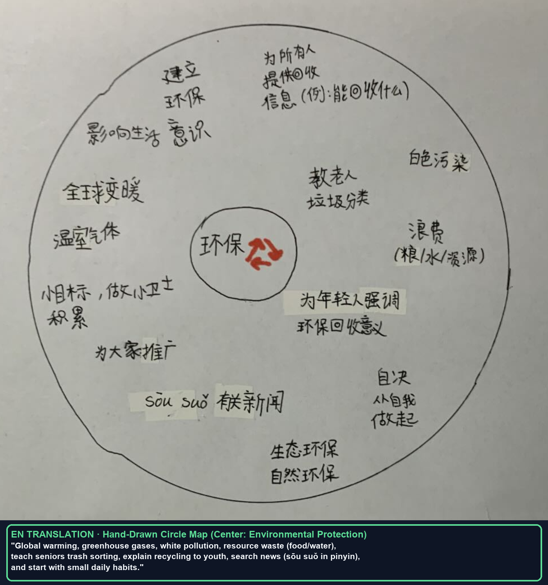
2. Breaking the Coach Wall: “Do It First” (0.5 Prototype), 50% Tuition to Coaches & Selecting 30–45yo Leaders
Before AI, the coach was the only source of feedback in the classroom. If the coach hadn't prepared every possible knowledge branch before class, a team would get stuck. With AI, our rule is simple: “Do It First.” Let the kids build a 0.5 prototype with AI and run it right away. Take our Spring 2026 Time-Management Mini-Program team (ages 8–14): they used Coze to combine a Pomodoro timer, “Eat Three Frogs” daily tasks, and pet-egg hatching into a mini-program. The moment they ran that 0.5 prototype, the bugs jumped right out on the screen—users could register repeatedly to farm infinite points, and pet eggs downgraded when leveling up! The coach didn't need to lecture them on product logic; the running prototype gave instant, undeniable feedback, and the kids wrote rules to cap daily tasks and block point-farming themselves.
Because AI and running prototypes handle domain knowledge and technical feedback—and our automated Feishu Wiki pipeline eliminates 80% of administrative paperwork—MarsNavi operates with zero traditional middle-office bureaucracy. That organizational efficiency allows us to pay 50% of tuition revenue directly to our coaches. Does less subject-matter prep mean anyone can be a coach? Quite the opposite. Because we refuse to turn coaches into scripted actors following rigid SOPs, our human bar is much higher. We select 30-to-45-year-old leaders—experienced product managers, project leads, and educators—who genuinely love children, have rich real-world problem-solving experience, can hold emotional space through heated team conflicts, and know how to guide with questions without taking over.
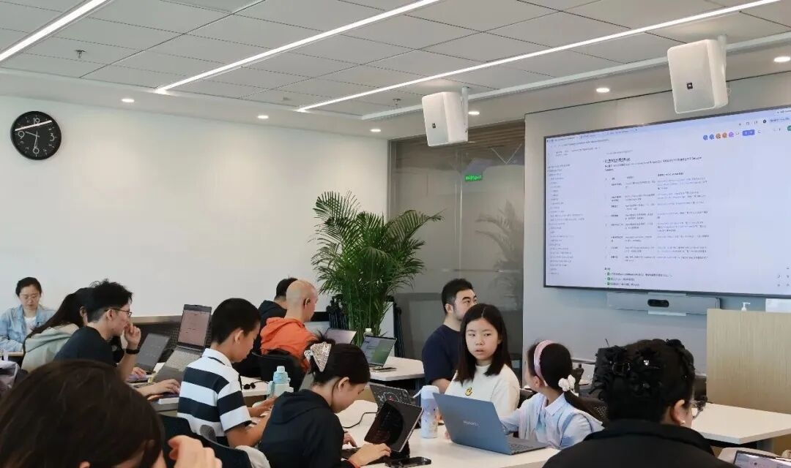
3. Breaking the Delivery Wall: Shipping Products That Solve Real Enterprise & Broadcast Problems
With AI, children's work no longer stops at posters or slide decks. In our Beijing camp, two students tackled a real management headache for a restaurant chain: store staff frequently wrote messy, unfocused incident reports after customer complaints or operational losses. The two students read real store archives, compared good reports against bad ones, distilled a clear 4-part reporting standard, and built a live Coze bot that interviews store staff step by step and automatically generates a structured incident report. And in our winter project for China's largest New Year's Eve broadcast, “Friends of Time,” our students designed and shipped 34 regional tribute covers that aired live on the national stage screen before 33 million+ viewers (full story in Chapter 3).
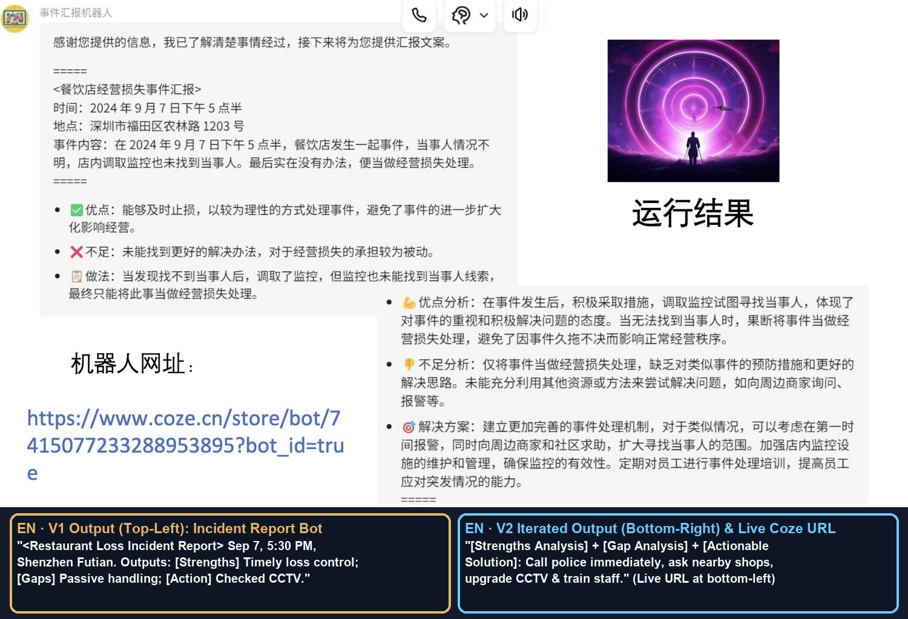
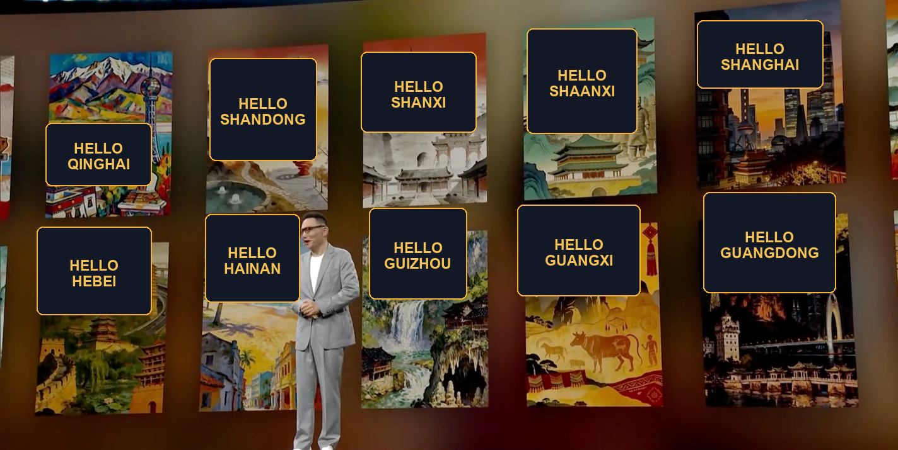
Why Kids Must Sketch on Paper Before Touching AI: Our 7-Step Methodology in Action
At MarsNavi, no matter what topic a student team chooses—an AI agent, a web game, a website, or smart hardware—every project must go through seven solid steps. Notice a critical rule in our workflow: in Steps 1, 2, and 3, the children are NOT generating their product with AI yet.
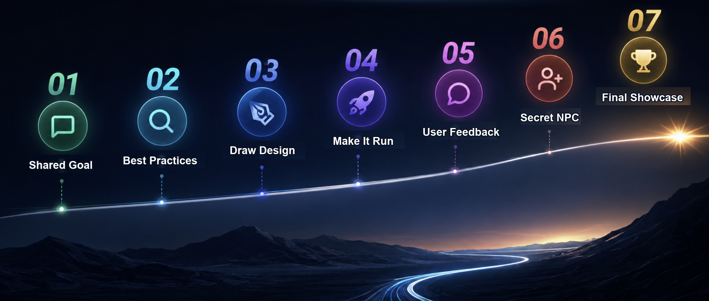
Consensus on the Project
Never assigned by the coach. The 6 kids must propose real pain points from their own lives, debate them, and reach genuine team consensus on one problem worth solving.
Find Best Practices
Every child researches existing products, competitors, and solutions in the market—analyzing what already works and what is still missing.
Sketch Product Design on Paper
Pick up pen and paper to draw the product blueprint, answering Why, What, and How. For example, before making a game, kids must answer 3 questions on paper: (1) Why build this game? (2) What is the core gameplay? (3) How do you win?
Make It Run
Use structured prompts and AI tools (Coze, Trae, DeepSeek, etc.) to build a working MVP where every single teammate contributes a concrete module.
Get User Feedback
Every child tests the MVP with real target users around them (classmates, parents, grandmas) and writes down concrete bugs and harsh critiques—not polite compliments.
Mystery NPC Interview
Why separate Step 6 from Step 5? In Step 5, kids test with people they know. In Step 6, the coach invites an unfamiliar adult—a real target user or industry expert whom the kids have never met—and the kids must prepare questions and interview them live.
Formal Showcase
Ship the live QR code, web link, or physical product to the public at a formal showcase and reflect on the full journey.
Walkthrough 1 · “Warm Tree-Hole” Emotion Companion Bot (Ages 8–10, Full Steps 1–7)
How do 8-to-10-year-old children actually run these seven steps? Let's walk through “Warm Tree-Hole,” built last autumn by a team of 8-to-10-year-olds—the direct predecessor of the stress-relief agent that later won #18 at the adult hackathon.
In Step 1 (Consensus), this team actually took a huge detour. They spent their first five classes discussing a cultural project about the Dunhuang Mogao Caves. By Week 6, the kids realized Dunhuang was too far removed from their daily lives. So they made a bold decision: they scrapped five full weeks of work and started over around a problem they experienced every day—how to comfort a classmate who is upset.
In Step 2 (Best Practices & Inquiry), their first idea for comforting someone was simple: “Let's have AI tell a joke!” Immediately, another child pushed back: “If your dad just beat you up, will hearing a joke make you happy?” Everyone agreed that wouldn't work. So they proposed a second rule: “No matter what happens, tell AI to stand unconditionally on the user's side!” They tested that prompt in Doubao. One child typed: “I beat up my classmate today, and I'm still mad.” And the unconditional AI replied: “You did a great job beating him up! Keep going until you feel better!” The kids were stunned. Nine-year-old Guo Mengyao asked a critical question: “What if the user is also partly wrong? If AI blindly takes their side, won't it harm them?” And 9-year-old Peixi added: “If a kid just had a huge fight with their mom and is still furious, telling them to understand their parents right away will only make them angrier.”
So in Step 3 (Paper Design), look at Peixi's handwritten sketch below: they designed a two-part product structure combining an “Emotion Wall” with an “AI Tree-Hole.” In Step 4 (Make It Run), after hours of debate, the children wrote five rigorous prompt rules in Coze: (1) Listen to the whole story before responding; (2) Separate the user's feelings from their actions; (3) Leave space for the user to keep talking—never rush to give advice after just one sentence; (4) Stand on an objective angle to distinguish facts from guesses; and (5) Stop immediately when the user doesn't want to talk anymore.
In Step 5 (User Feedback), they tested the bot on their classmates and caught two major bugs: the bot suddenly glitched and told a sad student to “Shut up!”, and when a girl complained about her mom, it immediately lectured her like a parent. In Step 6 (Mystery NPC), the coach brought in a Mystery Mom NPC. Talking with that unfamiliar mom helped the kids see both sides of the coin: children need a safe outlet to vent without being judged, while parents genuinely want to understand why their child is upset without prying into their diary. The kids rewrote their prompts to fix both bugs, and in Step 7 shipped the live agent at their formal showcase.
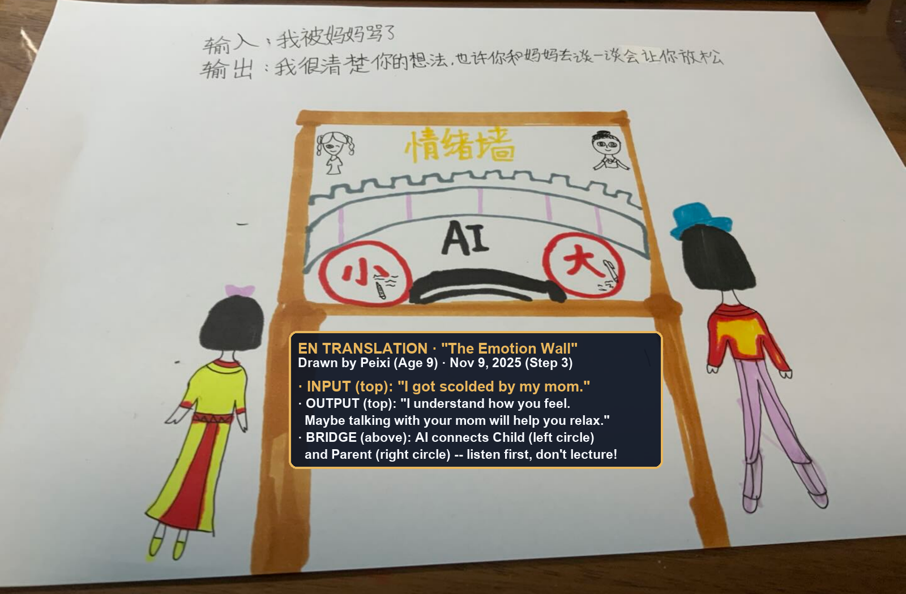
Walkthrough 2 · “Starfall Route” Alien Card-Shooter Web Game (Summer 2026, Full Steps 1–7)
After seeing an AI chat agent, educators often ask: what if kids want to build something with complex interactive rules, like a playable video game? Let's look at our second full online case from Summer 2026: an HTML5 card-shooter web game called “Starfall Route.”
In Step 1 (Consensus), the team hit a deadlock right away: one boy insisted on making a “Three Kingdoms Kill” card game, while another boy insisted on an alien space-shooter game. Instead of arguing endlessly or splitting up, the coach guided them through our 3-3-1 voting method—and the kids decided to fuse both genres together into an “alien invasion card-battle space shooter!”
In Steps 2 and 3 (Research & Paper Blueprint), they studied existing card and arcade shooters and sketched their complete game architecture on paper: 3 starter spaceships, 50 progressive difficulty levels, a coin shop, card synthesis, and Boss fights. When they asked AI to draft the opening story, AI generated pages of heavy sci-fi lore. The kids read it and immediately said: “Players come here to shoot aliens—who wants to read an essay first?!” and cut the wordy text themselves. In Step 4 (Make It Run), still with zero programming background, they used the AI coding tool Trae to generate and debug the playable 50-level HTML5 game and card artwork.
The richest learning happened in Step 5 (User Feedback), when they sent the game link to their parents and classmates. One boy, Shi Fengpei, watched his mom play: she couldn't dodge the bullets in the early levels and died immediately, whereas his classmates found the later levels too easy—and discovered a hilarious bug where a spaceship with zero HP still wouldn't die! So the kids went back to Trae, lowered the bullet speed for Levels 1 to 10 so beginners like Mom could get hooked, ramped up the difficulty after Level 10, and fixed the zero-HP bug. During that fix, AI accidentally rewrote and broke a spaceship mechanic they already loved. That experience taught the kids a golden rule of AI collaboration that they shared with the entire cohort: “When you ask AI to fix a bug, you must explicitly tell it NOT to change the parts that are already fun!” After interviewing a game industry expert NPC in Step 6, they shipped the finished 50-level game in Step 7.
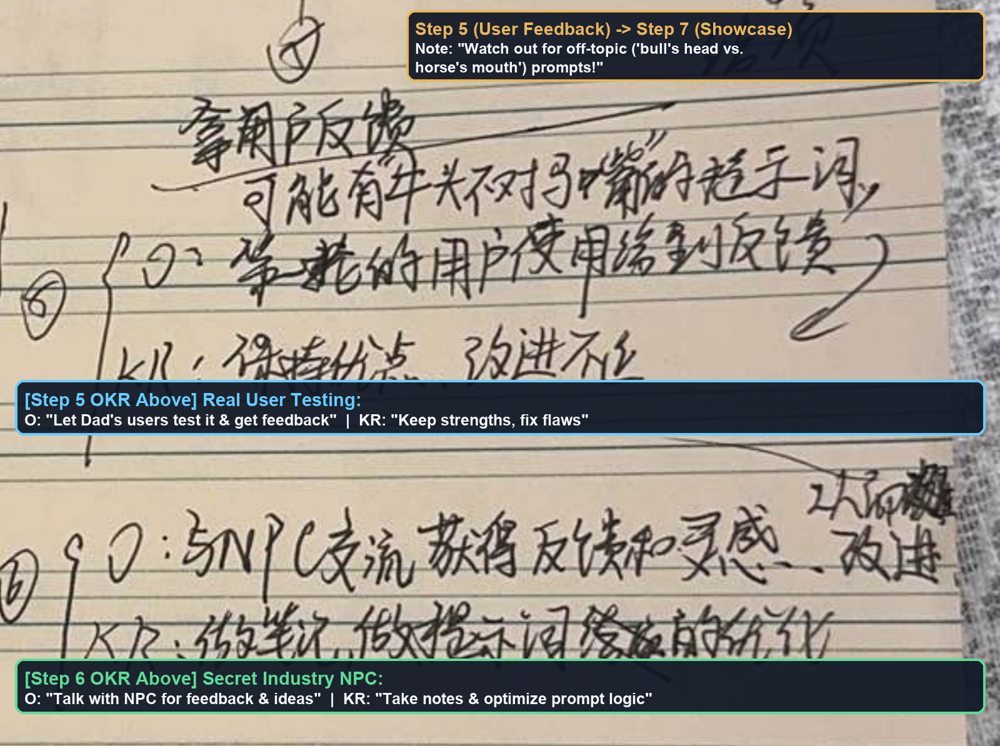
What Happens When 10-Year-Olds Face Real Commercial Rejection—and the Trap of Easy Enterprise Tools
In our regular online classes, the users are classmates, moms, and grandmas. What happens when our students take this 7-step methodology out of the classroom and step directly into the adult commercial world? In the real commercial world, two things get tested to the limit: first, what happens when you spend a full month on Steps 1 to 4, pitch your work to a real commercial client, and get rejected on the spot? Second, what happens when a hardware company hands you an enterprise AI tool so easy that you are tempted to skip Steps 1, 2, and 3 altogether?
Commercial Test 1 · “Friends of Time” New Year's Eve Keynote: Flat-Out Rejection & Agile Pivot to 34 Live City Covers
Every New Year's Eve, tens of millions of viewers across China watch Luo Zhenyu's live “Friends of Time” keynote. Last winter, we brought two teams of our students (ages 8–12) to take on a real task for this national broadcast. Following Steps 1 to 4, the kids worked for over a month on two proposals: one team designed “Personalized Polygon Tickets,” where the ticket border changed shape based on how many years an audience member had used the Dedao app—from a triangle to a square, all the way to an 11-sided polygon; a second team used AI to code an animated front-end web demo for the theme “The World in the Next 1,000 Days.” Two boys, Zhang Jiaqi and Liu Tianshu, even wrote a two-page handwritten letter to the keynote directors explaining how they studied over a thousand ticket designs for three weeks.
Then I took the kids to Dedao headquarters to pitch their work in person to the New Year's Eve Command Center. Many people assume: “They're 10-year-old kids—surely the adults will pat them on the head and praise them.” That is not what happened. After the kids finished presenting their slides, the directors rejected their proposal on the spot for three sharp commercial reasons: (1) sorting users by attribute on personalized tickets risked slapping labels on users, which violated the brand's core values; (2) it was already early December—both physical printing and online ticketing systems were locked, so there was simply not enough time; and (3) the web animation was just a visual demo without solid operational logic. Over a month of hard work was rejected right there in the conference room.
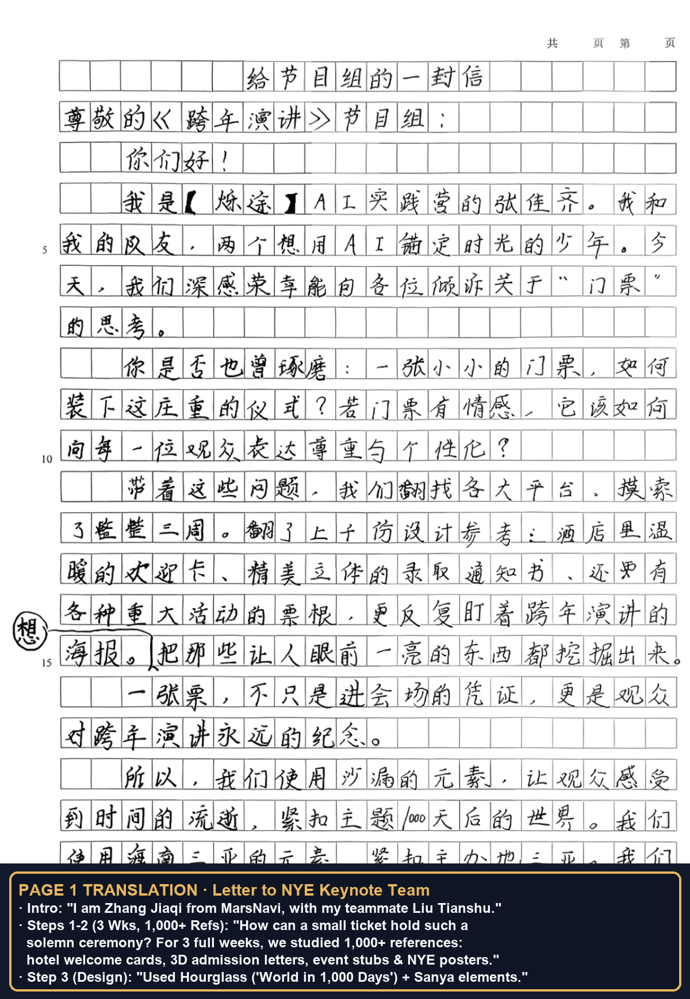
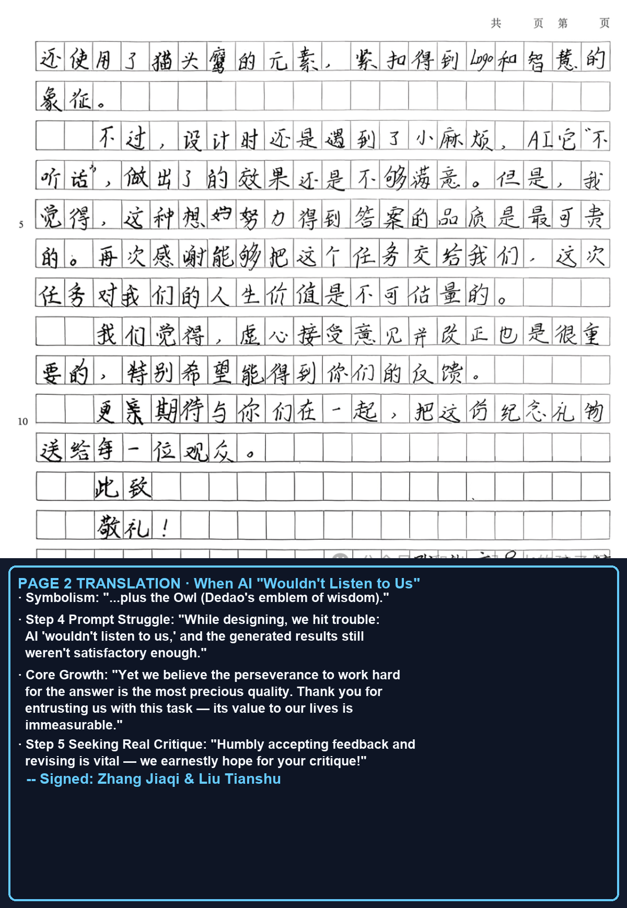
When the directors rejected the proposal, I sat right there in the room and kept a poker face. I didn't say a word to plead for the kids or comfort them—because in authentic PBL, there are no backdoor favors. If a client says no, it is a real no. Think about how old we were the first time a boss or client rejected our month-long proposal flat out—probably 22, 25, or 30. Our kids experienced that exact moment at age 9 and 10. Yet instead of crying or quitting, the children immediately asked the directors: “If the ticket plan doesn't work, what else can we do for the keynote?”
Right then, Luo Zhenyu was filming a series of short tribute videos called “Calling Out to All Regions” across China, and the post-production regional cover art was still needed urgently. The kids immediately let go of their month of sunk cost on the tickets, shouted “We'll take it!”, and threw themselves into high-intensity AI cover design under a strict broadcast deadline. On New Year's Eve, all 34 provincial and city covers designed by these children went live on the national stage screen, watched by over 33 million people—teaching them a lesson no textbook can convey: in the real world, “not having enough time is a fatal flaw.”
Commercial Test 2 · “Xiao Zhuge” Story Machine at Jollybubu: The Trap of Skipping Steps 1–3, Zero Sales & True Resilience
Now let's look at the second test in the commercial world: what happens when an enterprise AI tool is so powerful and easy that kids skip Steps 1, 2, and 3 altogether? In Summer 2026, five students from our L3 cohort (ages 10–11, including Peixi and Liu Tianshu) entered a real AI hardware company in Beijing called Jollybubu for a five-day intensive studio. Working inside the company's glass conference room, they were given full access to the hardware platform and a stack of programmable NFC “White Cards”—blank smart cards that trigger AI characters and voice stories the instant you tap them on the story machine base.
The moment our five kids got those NFC White Cards on Day 1, they were thrilled. Because the tool was so easy, they immediately started generating characters, writing scripts, and testing AI voices—throwing Step 1 (Consensus), Step 2 (Best Practices), and Step 3 (Paper Design) completely out the window! They decided to adapt the 120 chapters of “Romance of the Three Kingdoms” into 50 audio episodes (5 kids, 10 episodes each) and used AI to generate the first batch in a single afternoon. Then they put the 50 episodes together and listened: it was a total disaster. Some episodes were long, some were short; language styles clashed wildly; even character settings contradicted each other. That revealed a brutal truth of the AI era: the easier the AI tool is, the easier it creates the illusion that because the prototype is running, the project is finished.
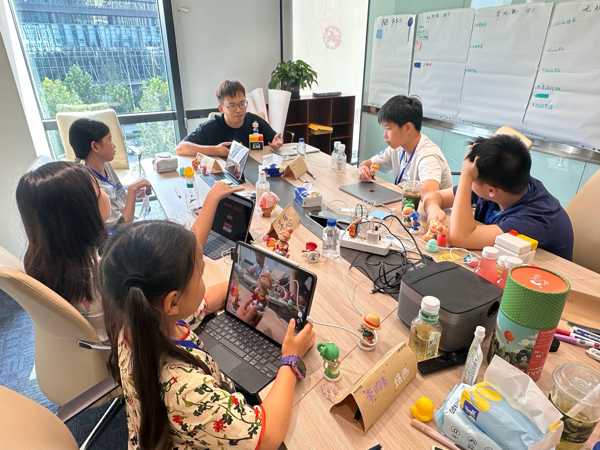
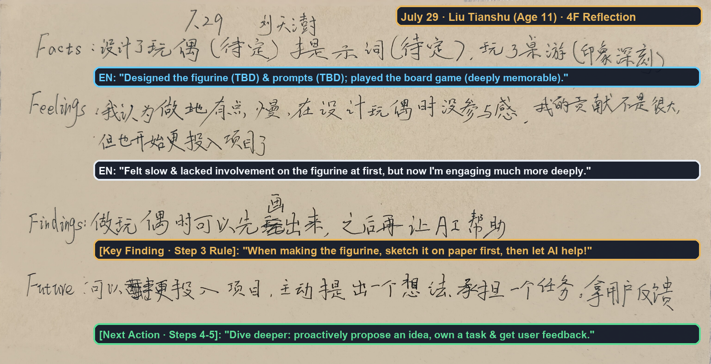
After hitting that wall on Day 1, the five kids had to stop generating and go all the way back to Steps 2 and 3. They studied how top audio creators like “Uncle Kai Tells Stories” tell the Three Kingdoms, and forced themselves to answer the core question: “With so many Three Kingdoms stories already on the market, why would any child listen to our version?” Through intense debate in Step 3, they designed an original IP on paper called “Xiao Zhuge” (Little Zhuge): a modern child who loves reading “Romance of the Three Kingdoms” falls asleep while reading Chapter 14, travels into the book in a dream, experiences the battles through Zhuge Liang's first-person perspective, and finally wakes up back in his bedroom. They unified the length, tone, and character relationships across all 50 episodes, added an Episode 51 where Xiao Zhuge reflects on the entire book, and taught themselves 3D modeling and 3D printing in Step 4 to fabricate the physical NFC figurine. As 11-year-old Liu Tianshu wrote on his reflection sheet: “Sketch on paper first, then let AI help.” That rule wasn't memorized from a teacher's slide—it was earned through failure.
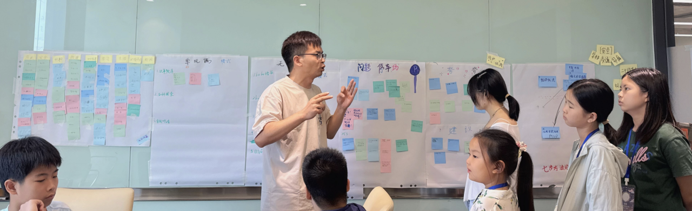
Then came Step 5: taking the working “Xiao Zhuge” story machine downstairs to a public park to test and sell it to real children and parents. In the playground, reality hit them again: kids at the park wanted to run around on the slides rather than sit still for an audio story, and when a few polite kids listened briefly and said “it's pretty good,” our students realized that polite praise is not real purchasing demand. Across those five days, the five kids hit a new wall every single day. At their lowest point in the conference room, they turned to the coaches and camera crew and said something unforgettable: “Coaches, can all the adults please step outside? Give us some space so we can quiet down and figure this out ourselves.” Our coaches walked out and waited outside the glass room for two full hours while those five ten-year-olds argued, wiped their tears, and worked out a new plan on their own. In a traditional classroom, letting kids spend two hours resolving a crisis looks slow—but in authentic education, slow is quick.
What was the commercial result after five full days? Zero units sold. Not a single one. Yet did the children give up? No. In their final reflection, 10-year-old Peixi pinpointed the exact reason parents didn't buy: “For a children's product, it has to be fun for the kid, and useful for the parent—we didn't give parents a strong enough reason to pay.” And all five kids told us: “Even with zero sales, we still give 100% effort—and in the autumn semester, we want to stay together and keep building Xiao Zhuge!” That is what Jensen Huang calls resilience—and you can never cultivate that resilience through one-click generation in a classroom simulation.
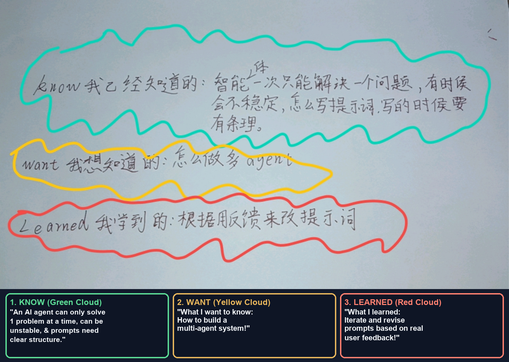
10 Million Spoken Words in Feishu Wiki: How Online + AI Makes Process Management Simple
In traditional offline classrooms, group discussions vanish into thin air the moment class ends. How did we turn the black box of PBL into a structured, searchable longitudinal archive without exhausting our coaches? Two factors: Online plus AI.
100% Natural Process Capture (80k–150k Words / Session)
In our 2.5-hour online classes on Feishu Meetings, each of the 6 kids speaks into their own microphone, naturally recording separate speaker tracks—80,000 to 150,000 spoken words (~900 speaker slices) per session, plus kids' mid-week small-group meetings. Even in our offline camps, every student table has 3 dedicated audio recorders. Across cohorts, we have accumulated over 10 million words of verbatim classroom dialogue.
3–5 Minute Automated Feishu Wiki Pipeline (80% Admin Saved)
Our core organizational rule is: standardization stays in the AI system, never on the coach. Within 3 to 5 minutes after a 2.5-hour class ends, the coach drops the Feishu Minutes link into our workspace, and our AI pipeline automatically synthesizes the raw transcript into the Feishu Wiki—saving 80% of admin and prep time. Whenever our Head Coach spots a new coaching insight or common pitfall across classrooms, the Head Coach updates the system prompt so every coach benefits automatically.
1. Inside the 3–5 Minute Coach Pipeline: Session Debrief, Talk-Ratio Alert & Project Support Kit
Look at the live English Feishu Wiki screenshot below. Within three to five minutes after class, the system generates two documents side by side. On the left is the Session Debrief: it automatically calculates how much the coach talked—triggering an alert if the coach spoke over 50% of the time (for instance, in our live demo we contrasted a healthy 47% coach talk-ratio session against an 80% session where a coach lectured too much)—checks whether the students sketched on paper before touching AI, and logs every child's exact quotes and actions. On the right is the Project Support Kit: based on the exact bottleneck where the team got stuck today, it gives the coach actionable guiding questions and reference cases for next week's session.
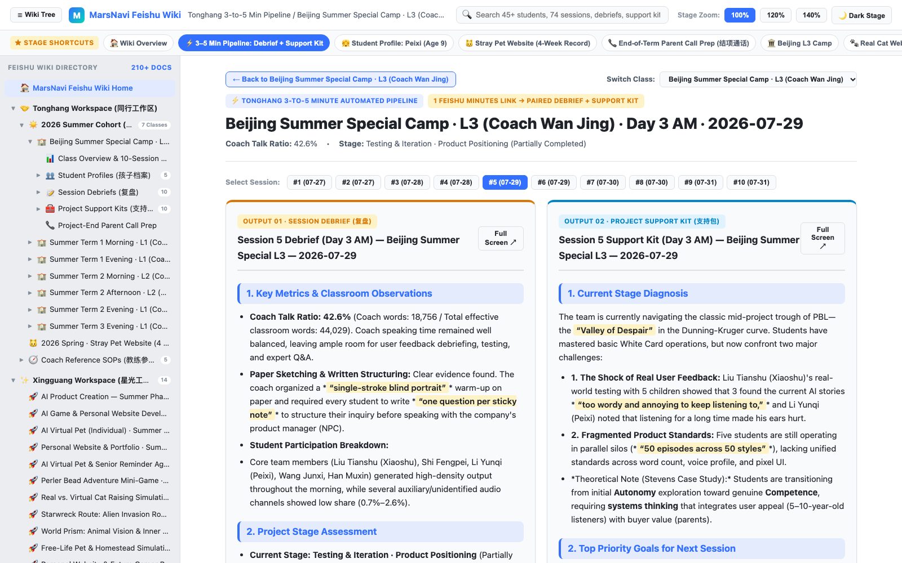
2. Multi-Week Evidence Chain: The 4-Week Stray Pet Recovery Website Trace (May 24 – June 14, 2026)
Beyond single classes, the Feishu Wiki connects the dots across weeks so any educator can see how AI feedback changes classroom behavior. Look at our four-week trace of the Stray Pet Recovery Website team from May 24 to June 14, 2026: on May 24 (Session 8), the kids wanted to build an all-in-one stray-animal mega-platform, and the coach talked 59% of the time trying to pull them back. Right after class, the AI Session Debrief flagged the 59% coach talk ratio and scope creep, while the Project Support Kit suggested letting the kids compare real lost-pet websites first to narrow their scope. Over the next two weeks (May 31 & June 7), the record shows the exact follow-up: the coach stepped back; the kids compared real lost-cat notices, decided themselves to cut the unmoderated comment section, ran pen-and-paper role-play bug hunting, and solved the post-deletion security problem (10-year-old Ye Yaoze proposed using the last four digits of an ID card as a deletion password before shipping on June 14).
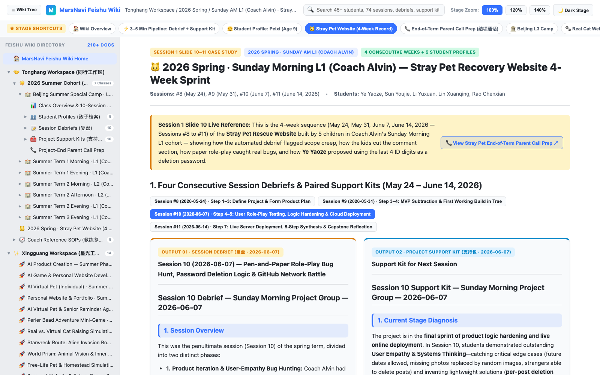
3. End-of-Term 1-on-1 Parent Call Prep Guide & Why Long-Term Retention Reaches 80%+
At the end of every term, the Feishu Wiki automatically generates a 4-part Parent Call Prep Guide for each child. When our coach calls a parent for a 15-to-25-minute one-on-one debrief, we never offer vague praise like “your child did great this term.” Instead, the coach tells the parent the exact date, the exact scene where their child stood up to resolve a team disagreement, and the exact sentence their child spoke. That concrete process evidence is why our student retention is ~40% from L1 to L2 and over 80% from L2 to L3. Even my own wife was skeptical before our child joined L1—she asked me what the kids were actually learning if they weren't being lectured on coding. After seeing our child's verbatim growth archive and real project work at the end of L1, she became MarsNavi's biggest supporter and insisted our child continue through L2 and L3.
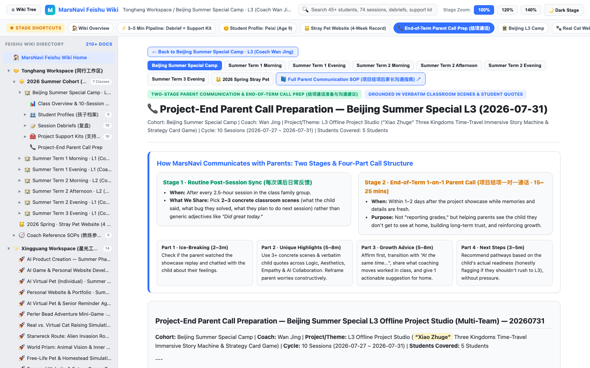
4. Deep Longitudinal Case Study · Peixi's 7 Consecutive Terms in Feishu Wiki (L1 → L3 · 66 Sessions · 11 Projects · 380k Spoken Words)
What does this data look like when a child grows with us over years? Meet Peixi. She joined MarsNavi at age 9 in Spring 2025 and is now in her seventh consecutive term—66 sessions, 11 projects, over 380,000 spoken words by her alone, and over 1 million words of Wiki documentation:
“Never Let AI Polish Your Words” & Drawing the Emotion Wall
While making a “100,000 Whys” science book in L1, 9-year-old Peixi told her teammates: “Never let AI polish your words—once AI rewrites it, it loses your own tone.” In the elderly companion project, she recorded her own voice for her grandma because “the machine voice feels too cold,” and in Warm Tree-Hole she hand-drew the Emotion Wall to help parents understand children's stress.
Separating Reading Attitude vs. Ability & 4-Step Dream Bot
In L2, while building a reading companion bot, she separated “not wanting to read (attitude problem)” from “not understanding the book (ability problem)” on paper before touching AI, and faced her older brother's blunt rejection during testing (“too naggy, I don't want to use it”). In the Spring cohort, she helped unpack Freud's Dream Analysis into a 4-step logic and engaged in a 15-minute live Q&A with our founder.
3D-Modeling “Xiao Zhuge” & “Fun for Kids, Useful for Parents”
At the 5-day Beijing hardware studio inside Jollybubu, Peixi hand-drew and 3D-modeled the “Xiao Zhuge” figurine, interviewed an 8-year-old girl and parents in the park, and after 0 sales in 5 days distilled the core law of children's products: “It has to be fun for the kid, and useful for the parent.”
20-Classmate Offline Survey & Stopping Topic Selection by Drawing Lots
In her 7th term (Autumn 2026 L3), Peixi used her own break time at school to interview 20 classmates offline on youth wellness. When her team deadlocked on choosing a topic and someone suggested drawing lots, she stopped them immediately: “Drawing lots is even worse than voting—if people don't agree from the heart, half the team won't put in real effort.”
AI Capability Is Always the 70-Point Baseline: Tools Complete Generation, Only Children Complete the Project
1. How Children Grow Across Four Dimensions & Open Academic Research Collaboration
Across our 10 million+ words of verbatim classroom transcripts, we never grade children with multiple-choice tests. Instead, we observe how their real words and decisions evolve across four dimensions—and we are actively opening this longitudinal process database to universities and education researchers worldwide:
From Vague 1-Line Wishes to Multi-Step Rules & Edge Cases
In the AI era, the ability to explain a messy problem clearly is more critical than ever. You can see it directly in students' prompts: they move from scattered wishes like “make me happy” to structured workflows, conditional branches, and boundary rules like the 5 listening rules in Warm Tree-Hole.
“Not a Know-It-All AI” & “It Looks Pieced Together—It Has No Soul”
By aesthetics, we don't mean a pretty UI—we mean blending human personality, perspective, and taste into the work. Like the student who said “our elderly bot cannot act like it knows everything—grandmas don't like that,” Peixi recording her own voice because “machine voices feel too cold,” or Liu Tianshu rejecting an AI draft because “it looks pieced together by AI; it has no soul.” I experienced the same thing myself when I spent 25 hours across three days building a Classical Chinese Poetry music app with AI: AI's first draft is always generic, and true taste comes from rejecting mediocre outputs and pouring your own life understanding into every detail.
Stepping Out of AI's Sycophancy to Face Grandma's & Brother's Rejection
Because AI always tries to please the user, kids can easily become more self-centered. Authentic PBL pulls them out of themselves: facing a grandma who throws the phone down after one minute (“I don't know how to type”), accepting an older brother calling a reading bot “too naggy,” and compromising with five teammates.
Calling on AI When Stuck, Yet Questioning & Verifying Its Output
Do children use AI to copy homework lazily, or as a partner to bring bold ideas to life? Our kids know how to call on AI when stuck, yet they never worship it—they fact-check it, guard their own voice, and tell AI explicitly not to overwrite the parts that are already fun.
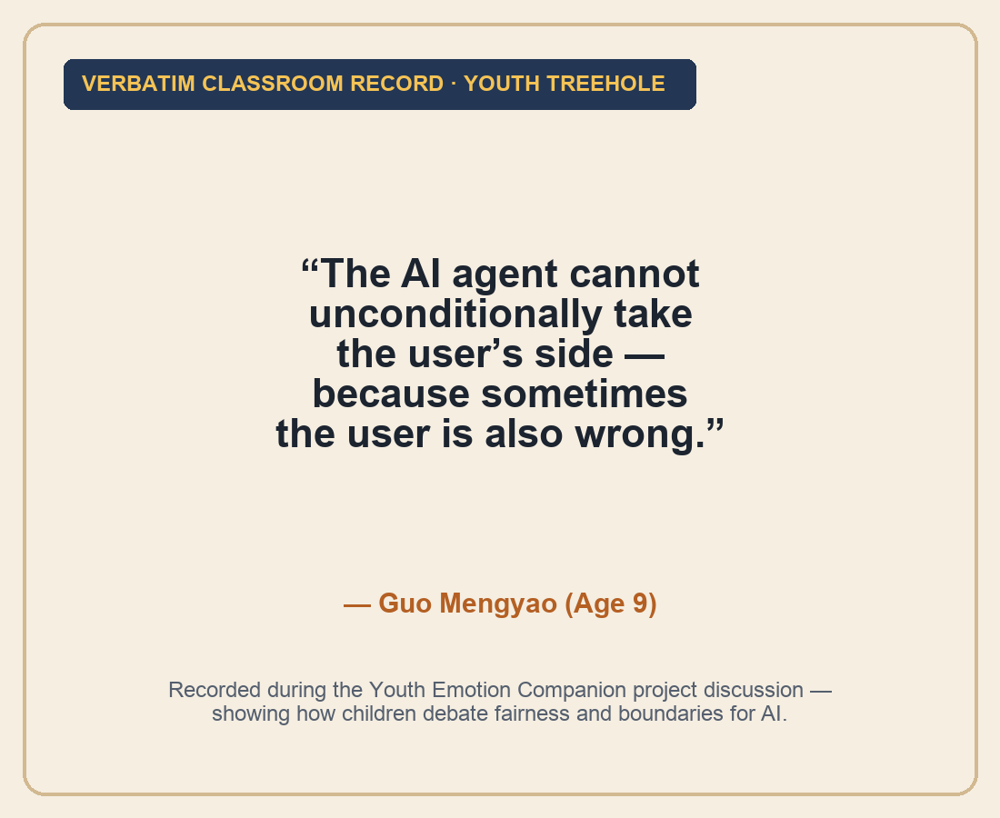
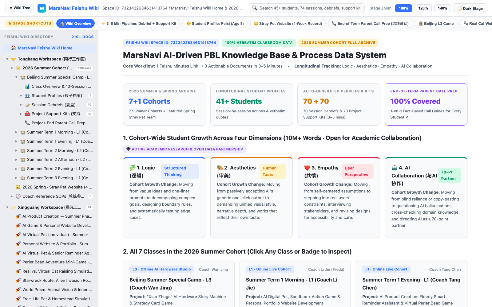
2. Redefining Labor: Why AI Capability Is ALWAYS the 70-Point Baseline
Why do we insist on training logic, aesthetics, empathy, and collaboration when AI seems so powerful? Because in the AI era, AI's capability is always the 70-point baseline. Why do so many people feel AI is magical? Because we usually test AI on things we don't know how to do ourselves! For example, I don't know how to compose music; if I ask AI to write a company anthem, it sounds amazing to me—that's 70 points. But if you play that AI song to a top songwriter like Jay Chou, he will politely say “it's okay”—it will never win an award. For someone who cannot code, AI code looks like a miracle; for a senior engineering team, it is 70-point code. AI is impressive because it scores 70 points in every single field.
Now, how many points will AI score three years from now? 80? 90? 100? No—ALWAYS 70 points. Think of sea level: sea level is elevation zero. Even as global warming makes the sea level rise, sea level is still elevation zero! As models upgrade from GPT-3 to today's frontier models, the 70-point sea level is rising rapidly—and any human work that stays below that 70-point sea level gets drowned. In this new world, any contribution below AI's 70-point baseline has been downgraded from intellectual labor to physical labor. In the past, categorizing accounting receipts, summarizing meeting notes, or looking up basic legal clauses required a human brain, so we called it mental labor. Today, AI does all of that at a 70-point level in seconds. There is a simple test to know whether you or your students are doing intellectual labor or physical labor on a topic: ask AI the question. If you read AI's answer and think, “Wow, that's brilliant! I learned so much!”, then on that topic your level is below 70 points—you are doing physical labor. If you read AI's answer and immediately say, “This completely misses the real problem—doing it this way will cause harm!”, then congratulations: you are above 70 points, and what you bring above 70 points is true intellectual labor.
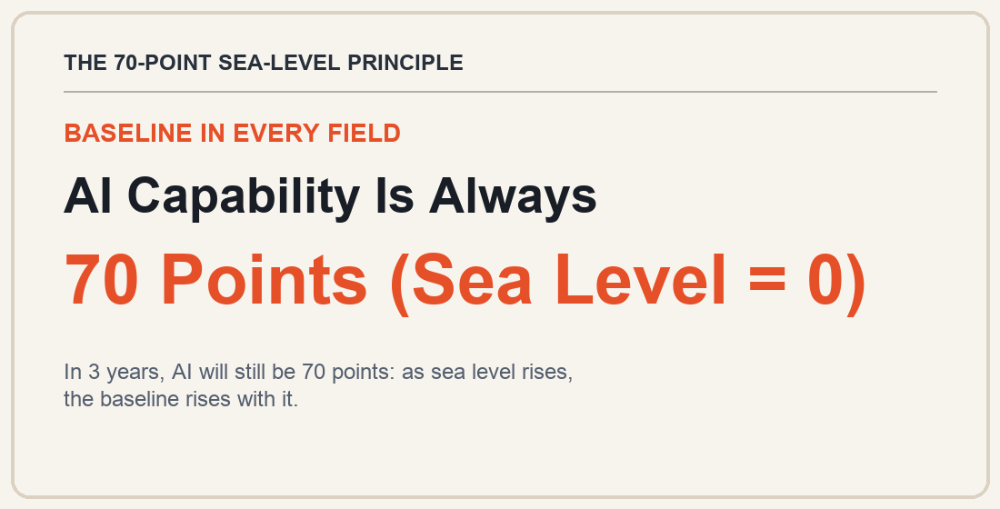
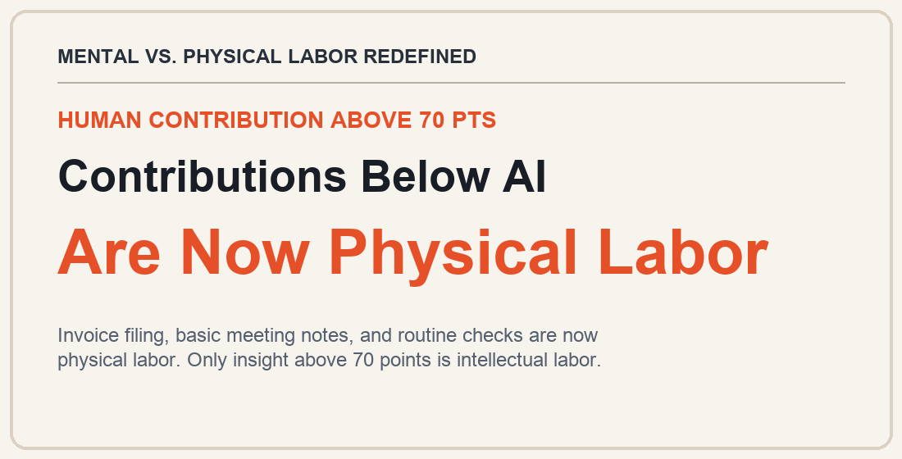
3. Against “One-Click Generation” & The Clear Division of Labor (Child, Coach, AI)
That is why we stand firmly against “one-click generation.” Before coming to Mountain View, I ran a two-sentence experiment: I typed one sentence into AI (“Build me a Minecraft-style block-building mini-game on a web page”), and when touch controls didn't work on my iPad, I typed a second sentence (“Make it work with touch controls on an iPad”). In two sentences, a playable 3D block-building web game popped out. Imagine if I showed that game to parents and bragged: “Look at the 3D game our students built with AI!” Honestly, that should send chills down our spine. Before AI, if a child typed 10,000 lines of code by hand to build that game, I would praise them to the sky. Today, typing two sentences to generate that game is below 70 points—it requires zero thinking, and praising a child for one-click generation puts their brain to sleep.
Look instead at the two handwritten sheets below from our students' real projects—this is what intellectual contribution above 70 points looks like. On the left is 10-year-old Shi Fengpei writing down real user pain points and feature trade-offs on paper (“Play Healthier”) before touching AI to build his game. On the right is 9-year-old Peixi in a reading project: she asked her teammates, “Doubao can already generate a study plan in one click—why should we build one?” And on her sheet, she separated two problems that even adults often conflate: “Doesn't want to read = Attitude problem; Can't understand the book = Ability problem. We must separate the two.”
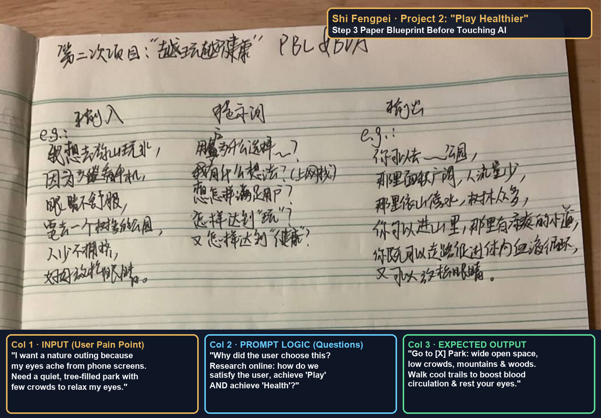
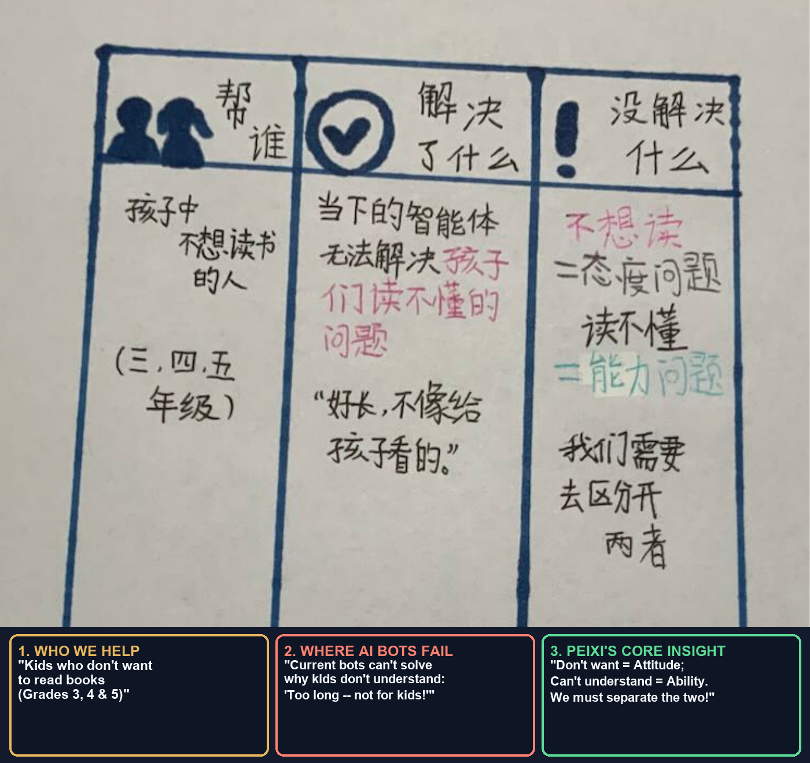
In our AI-powered PBL organization, the division of labor is crystal clear: (1) The Child holds direction, aesthetic taste, and final decisions—deciding what problem is worth solving, what counts as good, and how to trade off when the team disagrees; (2) The Coach holds emotional safety, team culture, and live judgment—asking tough questions when kids take shortcuts and holding space when real users reject their work; and (3) The AI System handles on-demand knowledge, 0.5 prototypes, and 80% of classroom data synthesis in the background. Tools complete the generation; only children complete the project.
4. Summit Live Q&A Highlights: Assessment, Teacher Role Shift & Why User Testing Is at Step 5
“With GPS vs. Without GPS” & Buying a Building 10 Years Before the Subway Arrives
An educator asked: when traditional exams still forbid AI, how should schools test students? I shared two thoughts: First, separate assessment into two explicit modes—“Without GPS” (closed-book foundational thinking without AI) and “With GPS” (giving students full access to AI and grading them strictly on whether their problem definition, taste, and final product rise above AI's 70-point baseline). Second, why build longitudinal process data now if college admissions haven't changed yet? Imagine knowing a subway line will open in 10 years: you don't wait until opening day to buy the building next to the station—you build the foundation 10 years early.
Objective Talk-Ratio Mirrors (47% vs. 80%) & Verbatim Process Evidence
Another educator asked how we stop teachers from over-teaching and parents from intervening. For coaches, we never lecture them with rigid SOPs—instead, the 3–5 minute AI debrief acts as an objective mirror, showing their exact talk ratio (e.g., 47% vs. 80%) and the exact moment they interrupted a student debate. For parents, anxiety comes from a black box; once parents read the verbatim Parent Call Guide showing how their child resolved conflicts and iterated through failure, they naturally step back and trust the child's growth.
Starting from Authentic Shared Pain Points, Testing with a Tangible Prototype
In Session 2, an educator asked why real user testing happens at Step 5 rather than Step 1. For 8-to-12-year-olds, if you ask them to interview strangers in Week 1 with empty hands, the conversation stays abstract and superficial. Instead, Step 1 starts from a real problem the six kids personally experience, and Step 2 studies existing solutions in the market. Once they build a working MVP in Step 4 and hand a playable game or bot to their mom, grandma, or a stranger in Steps 5 and 6, the real-world feedback—like Mom dying in Level 1 or zero sales in the park—hits them ten times harder and drives genuine iteration.